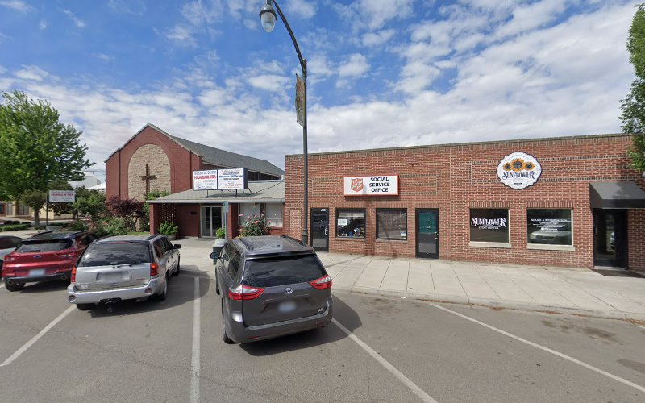

SA
Grandview - Food Distribution Center
Grandview, Washington 98930
Contact & Location
📍246 Division St #1357, Grandview, WA 98930
Hours
Monday
Closed
Tuesday
10AM-12PM
Wednesday
Closed
Thursday
10AM-12PM
Friday
Closed
Saturday
Closed
Sunday
Closed
Service Type
Food Pantry
About This Location
Grandview - Food Distribution Center is listed in our directory as a food pantry serving Grandview, Washington. Use the contact details above to confirm current hours, donation guidelines, services, and availability before visiting.